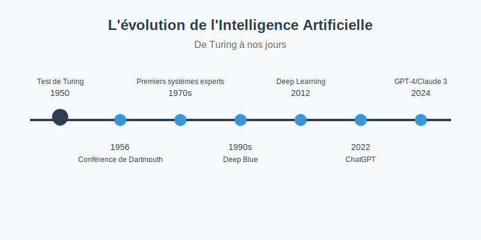

Points clés à retenir :
- 1950 : l'IA naît avec le test de Turing et la conférence de Dartmouth.
- 1960-1980 : les premières IA se heurtent à des limites, marquant un ralentissement.
- 1990 : le machine learning permet aux ordinateurs d'apprendre avec des données massives.
- 2010 : le deep learning révolutionne l'IA avec des systèmes créatifs et autonomes.
- 2022: Sortie des IA génératives pour le grand public.
Vous ne l'avez peut-être pas remarqué, mais l'intelligence artificielle s'est infiltrée partout dans notre quotidien. Elle suggère vos prochaines séries sur Netflix, pilote les voitures autonomes, détecte les fraudes bancaires et aide même les médecins à diagnostiquer des maladies.
Mais comment définir simplement cette technologie qui fascine autant qu'elle interroge ? L'intelligence artificielle[1], c'est la capacité d'une machine à imiter l'intelligence humaine. Elle peut apprendre, raisonner, et même créer. Une révolution technologique dont l'histoire commence bien avant nos smartphones, avec un mathématicien visionnaire nommé Alan Turing.
1950 : le rêve fou des machines pensantes
C'est en 1950 qu'Alan Turing, un brillant mathématicien britannique, imagine pour la première fois des machines qui pourraient « penser ». Dans son essai Computing Machinery and Intelligence, il propose le test de Turing[2] : une méthode pour évaluer si une machine peut se faire passer pour un humain lors d'une conversation. Cette idée devient le socle des premières réflexions sur l'IA.
Six ans plus tard, en 1956, se tient un événement marquant : la conférence de Dartmouth. Des chercheurs vont se réunir pour la première fois pour discuter du concept de l'intelligence artificielle. On y rêve déjà d'une IA capable de résoudre des problèmes complexes[3], tout comme le ferait un cerveau humain. Les espoirs sont immenses. À ce stade, le potentiel semble infini !
L'âge d'or de l'IA dans les années 60-70
Dans les années 1960 et 1970, l'IA connaît un véritable âge d'or ! Des systèmes experts[4] sont développés permettant à des machines de reproduire des compétences humaines dans des domaines spécifiques. MYCIN, un des premiers systèmes intelligents, peut par exemple diagnostiquer des infections bactériennes en analysant des symptômes fournis par des médecins. Ce type d'IA donne l'impression que les machines pourront un jour gérer des situations de plus en plus complexes, en particulier dans des secteurs aussi vitaux que la santé.
Durant cette période, les chercheurs s'appuient beaucoup sur ce qu'on appelle l'IA symbolique : un modèle basé sur des règles logiques et des algorithmes stricts. L'idée est de concevoir des machines qui, grâce à des symboles et à des règles, peuvent effectuer des raisonnements proches de ceux des humains[5]. Cependant, si ces approches sont efficaces pour résoudre des problèmes spécifiques, elles se heurtent vite à leurs limites. Les systèmes symboliques sont incapables de gérer des situations imprévues et de s'adapter sans intervention humaine.
Les années 1970 marquent alors le début d'un « hiver de l'IA »[6]. Les promesses initiales de l'IA s'avèrent difficilement réalisables. Les investissements dans le domaine chutent et l'IA est mise en veilleuse jusqu'à la fin des années 1980.
1990 : la révolution silencieuse du Machine Learning
Dans les années 1990, l'IA connaît un renouveau avec l'arrivée du machine learning[7], que l'on peut appeler apprentissage automatique. Le concept est simple : comme un enfant qui apprend à reconnaître un chat après avoir vu des centaines de photos, une IA « apprend » en analysant des milliers d'exemples, plutôt qu'en suivant des règles programmées.
Ce changement de paradigme est radical. Contrairement à l'IA symbolique qui nécessite une programmation explicite pour chaque tâche, les machines déduisent désormais des schémas en analysant de grands ensembles de données.
En 1997, l'IA franchit une étape historique : Deep Blue[8], un ordinateur développé par IBM, bat le champion du monde d'échecs Garry Kasparov. Cette victoire prouve que les machines peuvent surpasser l'humain dans des tâches spécifiques.
Avec l'explosion du big data et l'amélioration des capacités de stockage, les algorithmes d'apprentissage automatique deviennent plus puissants. Le traitement de quantités massives d'informations permet des prédictions toujours plus précises, ouvrant la voie à de nouvelles applications concrètes.
L'évolution de l'intelligence artificielle en un coup d'œil
L'IA moderne grâce à l'arrivée du Deep Learning
Dans les années 2010, de nouvelles percées dans le deep learning[9] transforment le paysage de l'IA. Cette fois-ci, imaginez un cerveau avec plusieurs couches de neurones qui communiquent entre eux : c'est exactement ainsi que fonctionne le deep learning. Comme un enfant qui apprend d'abord à reconnaître les formes, puis les couleurs et enfin les objets complexes, le deep learning analyse les informations par niveaux successifs.
Cette avancée transforme radicalement l'IA. Des projets pionniers comme Google Brain et ImageNet démontrent sa puissance : les machines peuvent désormais reconnaître des objets dans des images ou comprendre le sens des textes avec une précision impressionnante.
Plus récemment, les modèles génératifs comme GPT4 ou MistralAI ou Claude ont franchi une nouvelle étape. Ils ne se contentent plus d'analyser, ils créent : textes, images, vidéos émergent de simples instructions. Ces IA génératives[10] s'intègrent partout : assistants virtuels, systèmes de recommandation, outils de création... Elles deviennent les compagnons invisibles de notre quotidien !
Les nouveaux défis de l'IA : entre progrès et éthique
Les avancées rapides de l'IA posent aussi des défis, notamment éthiques. Par exemple, les IA peuvent amplifier certains biais[11] en fonction des données sur lesquelles elles sont formées, créant des préoccupations pour l'équité et l'inclusivité. L'automatisation des tâches soulève également des questions sur l'avenir de l'emploi et les droits de chacun, tandis que la surveillance accrue par les technologies IA inquiète sur la vie privée.
Pour limiter ces risques, des gouvernements et des entreprises cherchent à encadrer l'utilisation de l'IA avec des régulations adaptées[12], visant à équilibrer innovation et éthique.
Malgré tout ce qui a été accompli, l'IA reste un domaine en pleine exploration, porteur de défis et de nouvelles opportunités. La route est encore longue pour que l'IA atteigne son plein potentiel, vous pouvez déjà la retrouver dans plusieurs secteurs d'activités.
Notes et sources
- Wikipedia—Intelligence artificielle
- Wikipedia—Test de Turing
- Cairn — Revue Sécurité et Stratégie
- Wikipedia—Systèmes experts
- IBM — Intelligence artificielle
- Cairn—Hiver de l'IA
- FollowTribes—Machine Learning
- Stratechery—Deep Blue
- FollowTribes—Deep Learning
- Stratechery—IA générative
- Cairn—Biais et IA
- IBM— Régulations IA